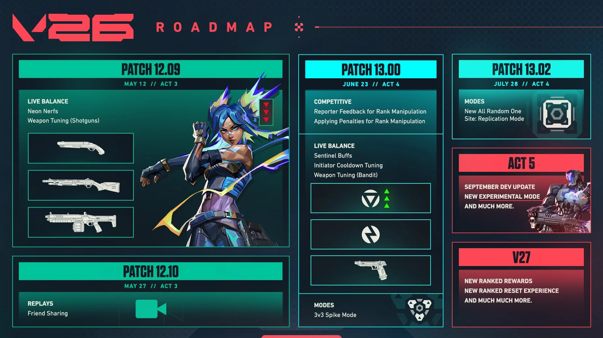

El día que salió el parche 12.09 con los nerfs de Neon y las escopetas, Riot lanzó también un Dev Update con todo lo que viene en los próximos patches. El 13.0 se lleva la parte más interesante: Sentinels y Iniciadores reciben los buffs más grandes que estas dos clases vieron en meses, y la Bandit finalmente deja de ser una pistola de ronda de pistolas exclusivamente.
¿Por qué cambiaron primero el 12.09 y no esperaron al 13.0?
Riot explicó la lógica: Neon y las escopetas eran problemas urgentes que no podían esperar. Pero meterlos junto a buffs masivos de Sentinel e Iniciador en un solo parche era demasiado — muy fácil sobrepasar y terminar revirtiendo el estado del meta. Así que separaron los cambios en dos parches para poder medir bien cada cosa.
Initiators: 10 segundos menos de espera en la signature
Con el parche 13.0, todos los Iniciadores van a tener el cooldown de su habilidad signature reducido de 60 a 50 segundos. Son 10 segundos que en la práctica cambian mucho: más info disponible por ronda, mejores retakes, más layers en los executes. Agentes como Sova, Fade, Gekko y Breach son los directamente beneficiados.
Para el jugador promedio, el cambio más visible va a ser poder usar la signature en rondas consecutivas sin sentir que "te quedaste sin el kit". En ranked especialmente, donde los Iniciadores suelen ser los más castigados cuando el equipo pierde una ronda económica.
Sentinels: más capacidad de holdear sites
Los detalles exactos de los buffs a Sentinels no se revelaron en el Dev Update, pero Riot fue claro con el objetivo: los Sentinels van a poder retardar entradas más efectivamente. Entradas explosivas bien coordinadas van a encontrar más resistencia que hoy. Sage, Killjoy, Cypher y Chamber son los candidatos obvios a recibir algo.
En el contexto actual del meta, donde las entradas con flashes y smokes de Duelists dominan, que los Sentinels vuelvan a ser una amenaza real en la defensa sería un cambio bienvenido por la comunidad competitiva.
La Bandit sale del ghetto del pistol round
La pistola Bandit lleva meses siendo exclusivamente una opción de pistol round o anti-eco. Riot reconoció esto y confirmó que le van a dar buffs para que la pistola sea viable más allá de los primeros rounds. No revelaron los números, pero el objetivo declarado es que aparezca en situaciones de buy incompleto sin que sea una desventaja automática.
¿Cuándo llega el 13.0?
Riot no confirmó fecha exacta para el parche 13.0 en el Dev Update del 12 de mayo. Por el calendario habitual de patches en Valorant, lo más probable es que caiga a fines de mayo o principios de junio. Vamos a actualizar cuando haya fecha oficial.
Si jugás Sentinel o Iniciador, el 13.0 va a ser un parche para marcar en el calendario.